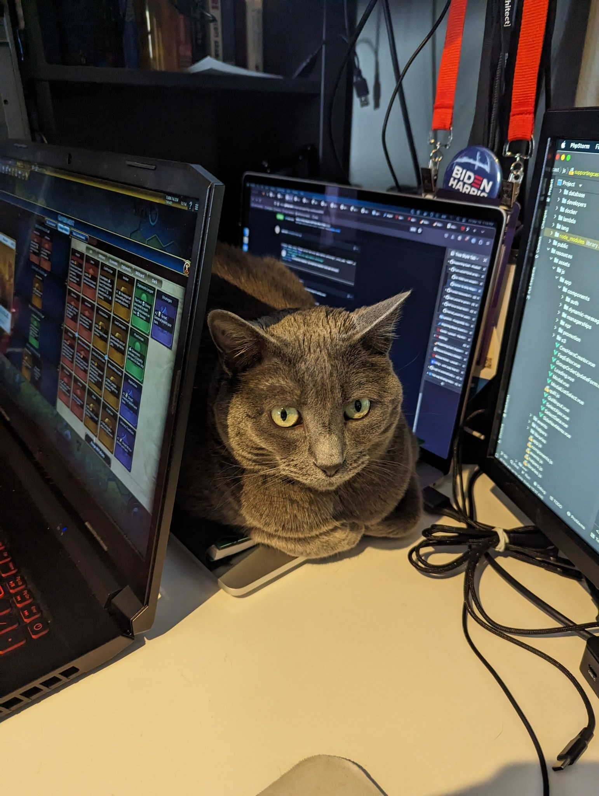

Qualifications
Theodosia's character and experience would make her an excellent candidate for any programming position:
- She has a flexible schedule, and is able to adapt her sleeping hours for any contingency.
- She has a proven track record when it comes to effectively communicating problems to her teammates, having developed a novel meowing strategy she has used throughout her previous positions.
- She has over 5 years of experience with eliminating bugs. Achievements include removing the entire cricket population at both of her places of residence and confirmed kills of several moths.
- IMPORTANT NOTE: Theodosia will not take any position that involves removing spiders. She would never attack another huntress, especially one with such a beautiful technique.
- Relatedly, she would be eager to help coordinate the development of any spiders a search engine company might need.
- She hones her computer science skills on a daily basis, as seen in the below image:

Here is an example of her coding technique:
function eat(testedFunction, testValue, expectedValue) {
if (testedFunction(testValue)===expectedValue) {
return testedFunction;
} else {
return "";
};
};
//the below scenario assumes the function variables are not constants
exampleFunction=eat(exampleFunction, varA, varB);
//most problems can be solved by eating them
Return to home